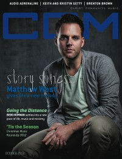

Matthew West
 |
| December 2011 CCM Digital |
 |
| October 2012 CCM Digital |
 |
| 15 May 2015 CCM Digital |
 |
| 1 November 2017 CCM Digital |
Media coverage:
- Jan 2004 in Christian Music Planet "12 Artists to Watch in 2004: Matthew West"
- Feb 2004 in CCM "Ones to Watch: Accidental Tourist", by Robert Mineo
- Mar 2006 in CCM "Fanfare: Matthew West, Megan Garrett, Lil iRocc Williams", by Lindsay Williams
- Apr 2006 in CCM "!Songwriters", by Christina A. Banister
- Apr 2007 in CCM "Freedom Writers", by Lizza Connor
- May 2010 in CCM Digital "Mission Matters: The Homeless in America"
- Oct 2010 in CCM Digital "Sing Us a Song, You're the Story Man", by Martha Fry
- Dec 2010 in CCM Digital "The Writer's Room: The Consummate Storyteller"
- Dec 2011 in CCM Digital "The Heart of the Season", by Caroline Lusk
- Dec 2011 in CCM Digital "Musicians Corner: Story Behind the Song: David Crowder, Matthew West, TobyMac"
- Oct 2012 in CCM Digital "Story Songs: Matthew West gives life a new melody", by Matt Conner
- Feb 2013 in CCM Digital "Tour Spotlight: The Story Tour, Sears Centre, Hoffman Estates, IL", by Andy Argyrakis
- 1 Jan 2014 in CCM Digital "Tour Spotlight: Into the Light Tour, Centennial Chapel of Olivet Nazerene University, Bourbonnias, IL", by Andy Argyrakis
- 15 Aug 2014 in CCM Digital "A Life Well Lived", by Caroline Lusk
- 15 May 2015 in CCM Digital "Sticking to the Stories", by Matt Conner
- 15 May 2017 in CCM Digital "Text Messages", by David Daniels
- 1 Nov 2017 in CCM Digital "It's Now, Or Never", by Kevin Sparkman
Albums & reviews:
2004: Happy
2008: Something to Say
- Jan 2004 in Christian Music Planet, by Jenni Isaac
- Feb 2004 in CCM, by Anthony DeBarros
- Mar 2004 in Today's Christian Woman, by Holly Vicente Robaina
- Mar 2004 in Worship Leader, by Tyrone Laramie
- May 2004 in YouthWorker, by Dave Urbanski
- Jul 2005 in CCM, by David A. Jenison
- Sep 2005 in YouthWorker, by Dave Urbanski
- Sep 2005 in Relevant, by Erica Howard
- Oct 2005 in Living With Teenagers, by Joy Fisher
2008: Something to Say
- Jan 2008 in CCM, by Chris Well
- Mar 2008 in YouthWorker, by Chris Well
- May 2008 in Worship Leader
- Oct 2010 in Charisma
- Oct 2010 in CCM Digital, by Matt Conner
- Nov 2010 in Worship Leader, by Katie Finley
- Feb 2011 in Living With Teenagers, by Randy Williams
- Nov 2011 in Worship Leader, by Jeremy Armstrong
- Dec 2011 in Christianity Today, by Ted Olson
- Dec 2011 in Charisma
- Dec 2011 in CCM Digital, by Grace S. Aspinwall
- Oct 2012 in CCM Digital, by Grace S. Aspinwall
- Nov 2012 in Worship Leader, by Jeremy Armstrong
- 15 May 2015 in CCM Digital, by Grace S. Aspinwall
- 15 Nov 2016 in CCM Digital, by Matt Conner
Award Summary (Nominations / Wins)
Dove Awards- 2005 Dove Awards
- Song: "More"
- Pop/Contemporary Album: Happy
- Recorded Music Packaging: Happy
- New Artist
- Pop/Contemporary Recorded Song: "More"
- Song: "Only Grace"
- Song: "Hide"
- Short Form Music Video: "My Own Little World"
- Song: "Forgiveness"
- Song: "Hello My Name Is"
- Song: "Just Be Held"
- Songwriter
- Song: "Broken Things"
- Songwriter
- Pop/Contemporary Album: All In
- 2009 Grammy Awards
- Best Gospel Song: "The Motions"
- Best Contemporary Christian Music Song: "Strong Enough"
- Best Contemporary Christian Music Album: Into The Light
Regular columns
In CCM: "The Writer's Block"Published articles:
© 2011 CMnexus. Last updated September 2019. Contact: editor -AT- cmnexus -DØT- org About